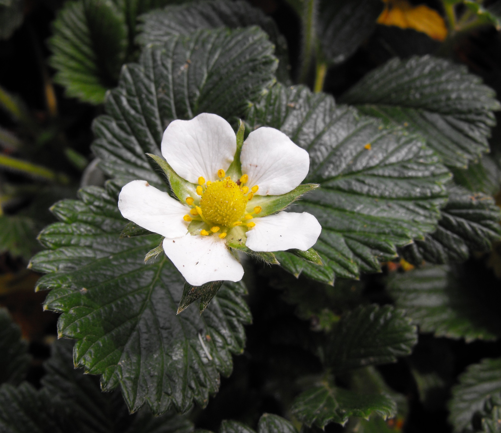
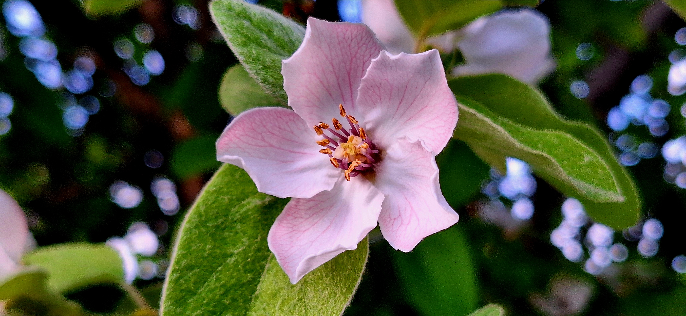
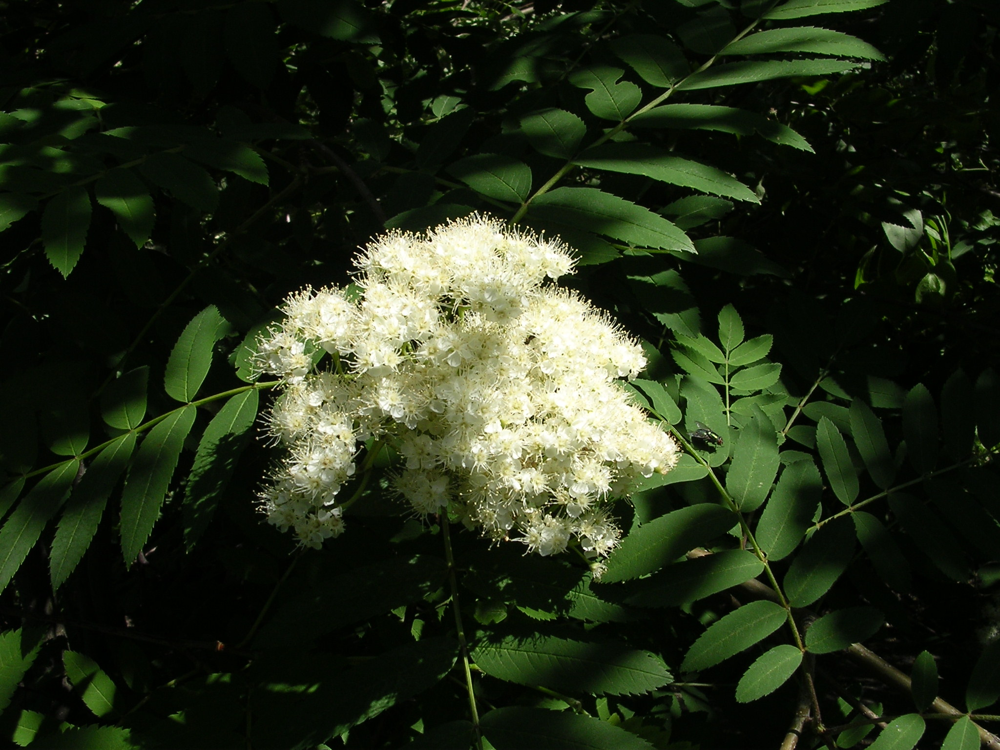
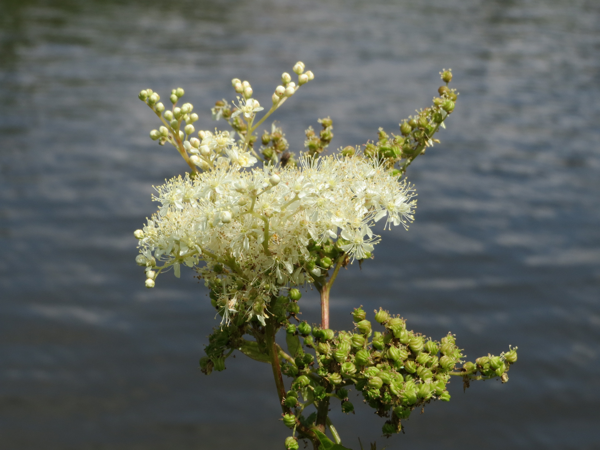
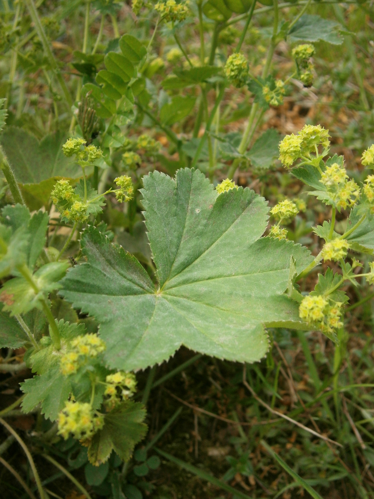

Rosaceae
rose family
|  Fragaria nilgerrensis (nilgiri strawberry) from Wikimedia Commons by Stickpen - Own work, Public Domain |
 Cydonia oblonga (quince) from Wikimedia Commons by Spring's Flowers - Own work, CC0 |
|  Sorbus sp. (rowan) from Wikimedia Commons by Olegivvit, CC BY 2.5 |
 Pyracantha sp. (firethorn) from Wikimedia Commons by JLPC - Own work, CC BY-SA 3.0 |
{kind=link}
{kind=link}
{kind=link}
botanical characteristics
Botany in a Day, p. 91-5 | "Rosaceae", Wikipedia
- overall characteristics
- includes woody trees, shrubs, climbers or herbaceous plants
- leaves are alternate and can be simple, trifoliate, palmate, or pinnate
- leaf shape is frequently oval with serrated edges
- flowers have 5 (rarely, 3-10) separate sepals and a similar number of petals
- minimum of 5 stamens but typically many more (often in multiples of 5)
- several to numerous pistils or numerous styles, resulting in a distinctive fuzzy-looking flower center surrounded by stamens
- many types of fruit produced, from fleshy fruits to false fruits, dry seeds, capsules, or follicles
- Rosoideae (rose) subfamily
- most have a slightly domed receptcle beneath the pistils
- differentiated from buttercups by stipules (small, leaf-like growths at the base of leaf stems)
- Dryadoideae (dryad) subfamily
- ovary matures to an achene (dry seed), but the style remains attaches, forming a distinctive feathery plume attached to each seed
- associate with nitrogen-fixing bacteria in the soil
- Amygdaloideae (almond) subfamily
- includes the former spiraea, plum, and apple subfamilies
- spiraea-type plants are mostly shrubs with foamy-looking, dense clusters of small white or pink flowers with stamens extending beyond the petals
- plum-type plants have horizontal lenticels (pores) in the bark and their ovaries mature as a drupe (fleshy fruit with a stony seed) with a characteristic seam down one side of the fruit
- apple-type plants have a five-pointed star on the bottom of the fruit, which is a false fruit known as a pome
distribution
"Rosaceae", Wikipedia
- 4828 known species in 91 genera
- cosmopolitan distribution, being found nearly everywhere except for Antarctica
- primarily concentrated in the Northern Hemisphere in regions that are not desert or tropical rainforest
ecological roles
"Understanding the Rosaceae Family", Bowhayes Trees
- many members provide nectar and pollen for pollinators like bees and butterflies
- many members also serve as a food source for wildlife; birds and mammals consume fruits, aiding seed dispersal
- pecies like Rubus (brambles) act as pioneer plants, stabilizing soil in disturbed areas
- members of Dryadoideae form symbiotic relationships with nitrogen-fixing bacteria, improving soil fertility
"Rosaceae", Wikipedia
- several genera are also introduced noxious weeds in some parts of the world and can have negative impacts on the diversity of local ecosystems once established
- naturalised pests include Acaena, Cotoneaster, Crataegus, and Pyracantha
common pharmacological constituents
"Angiosperm families - Rosaceae L.", DELTA
- sugars transported as sucrose, or as sugar alcohols + oligosaccharides + sucrose (a quite wide sample found consistently depauperate in oligosaccharides); inulin not found; cyanogenic (very commonly), or not cyanogenic; cynogenic constituents phenylalanine-derived, or leucine-derived; alkaloids absent (nearly always), or present (very rarely); arbutin present, or absent; iridoids not detected; saponins/sapogenins present, or absent; proanthocyanidins present, or absent; cyanidin (with the sole exception of a single species of Potentilla); flavonols present (nearly always); kaempferol and quercetin (nearly always); ellagic acid variously present (numerous Rubineae, Potentillineae, Dryadineae, Cercocarpeae, Ulmarieae, Sanguisorbieae, Roseae), or absent (numerous Spiraeoideae, Pomoideae, Kerrieae, Prunoideae); ursolic acid present
Botany in a Day, p. 91-5
- tannins are common in the vegetation of Rosaceae plants, giving astringent properties
- cyanide compounds are found in the leaves and fruits of some members
patterns in medicinal actions
- protects its nutritional value with cyanide and prickles
- astringent, tonic, vulnerary actions common
- drying and tightening actions tone smooth muscles, strengthens the soft parts
- many plants support the uterus and menstrual cycle, the digestive system, and the excretory system (but the whole body is supported by this family)
traditional/cultural uses
"Rosaceae", Wikipedia
- the rose family is considered one of the most economically important crop plant families and includes apples, pears, quinces, medlars, loquats, almonds, peaches, apricots, plums, cherries, strawberries, blackberries, raspberries, sloes, and roses
- many genera are also highly valued ornamental plants, including trees, shrubs, herbaceous perennials, alpine plants, and climbers
- in Bulgaria and parts of western Asia, the production of rose oil from fresh flowers such as Rosa damascena, R. gallica, and other species is an important economic industry
warnings
Botany in a Day, p. 91-5
- the nuts of all species of genus Prunus contain amygdalin, a glycoside that breaks down into benzaldehyde and cyanide
- amygdalin is considered beneficial in small doses (it is also known as vitamin B17), but causes cyanide poisoning in excess
- cyanide prevents cells from utilizing oxygen in the bloodstream, leading to cellular asphyxiation
- cyanide is easily destroyed by heat, sunlight, and oxygen; proper cooking, drying, or oxidation makes the pits of these plants edible
extra information
prominent genera
Rosoideae
- Agrimonia (agrimonies)
- Alchemilla (lady's mantles)
- Filipendula (meadowsweets)
- Fragaria (strawberries)
- Geum (avens)
- Potentilla (cinquefoils, silverweeds)
- Rosa (roses)
- Rubus (raspberries, blackberries, salmonberries, thimbleberries)
Dryadoideae
- Dryas (dryads, mountain avens)
Amygdaloideae
- Aronia (chokeberries)
- Amelanchier (serviceberries)
- Cotoneaster (cotoneasters)
- Crataegus (hawthorns)
- Cydonia (quinces)
- Eriobotrya (loquats)
- Malus (apples)
- Photinia (Christmas berries)
- Prunus (cherries, plums, apricots, peaches, nectarines, almonds)
- Pyracantha (firethorns)
- Pyrus (pears)
- Sorbus (rowans, mountain ashes)
- Spiraea (spiraeas, meadowsweets)
plant highlights
see list of materia medica entries here
Filipendula ulmaria
|  from Wikimedia Commons by AnRo0002 - Own work, CC0 |
common names: meadowsweet, queen of the meadow en español: ulmaria, reina de los prados |
{kind=link}
description
"Filipendula ulmaria", Wikipedia
- stems are erect and furrowed, reddish to sometimes purple
- leaves are dark-green on the upper side and whitish and downy underneath, much divided, interruptedly pinnate, having a few large serrate leaflets and small intermediate ones
- delicate, graceful, creamy-white flowers clustered close together in irregularly-branched cymes, having a very strong, sweet smell redolent of antiseptic
- flowers are small and numerous, with 5 sepals and 5 petals and 7 to 20 stamens
distribution
"Filipendula ulmaria", Wikipedia
- native throughout most of Europe and Western Asia (Near East and Middle East)
- introduced and naturalised in North America
- dominant in fens and wet woods
medicinal/magical uses
The Modern Herbal Dispensatory, p. 266
- analgesic, antacid, anti-inflammatory, stomachic, cooling, drying
- contains salicin, a compound similar to aspirin, so it is useful for reducing pain and inflammation
- may take 6-8 hours to take effect
- settles the stomach and has antacid properties
- contains silica, which aids the skin, joints, and connective tissues
The New Age Herbalist, p. 104
- exemplifies the principle that the whole plant is greater than the sum of its parts: the anti-inflammatory salicylates can cause gastric bleeding, but the tannin and mucilage content counteract this
- the whole plant is a traditional remedy for acid stomach
- tannin content is useful for diarrhea
- has an antiseptic diuretic action, promoting the excretion of uric acid
- hot infusion is diaphoretic
- altogether, an herbal aspirin - aspirin was named for its previous botanical name Spirea ulmaria
preparation methods
The Modern Herbal Dispensatory, p. 266
- infusion
- tincture
- poweder
warnings
The Modern Herbal Dispensatory, p. 266
- some herbalists do not recommend meadowsweet in small children
- can cause nausea and vomiting in large doses
Alchemilla vulgaris
|  from Wikimedia Commons by Meneerke bloem, CC BY-SA 3.0 |
common names: lady's mantle en español: pie de león |
{kind=link}
description
"Alchemilla vulgaris", Wikipedia
- distinctively corrugated and lobed (5 to 11 lobes with the upper leaves having fewer) kidney-shaped to semicircular leaves
- yellowish-green flowers form clusters
- individual flowers have no true petals but a four-lobed epicalyx, four sepals and usually four but sometimes five stamens
distribution
"Alchemilla vulgaris", Wikipedia
- native to Europe and Greenland
- commonly seen in unimproved or lightly fertilized grassland, on roadside verges and banks, in chalk downland and on mountain slopes
medicinal/magical uses
The Modern Herbal Dispensatory, p. 257-8
- antidiarrheal, astringent, uterine tonic, vulnerary, drying, constricting
- used as a tonic for the uterus and as a remedy for vaginal discharge and heavy menstrual bleeding
- hemostatic, can be used for other types of bleeding
- diuretic, eases edema
The New Age Herbalist, p. 104
- previously used externally to treat wounds
- used to treat heavy periods and as a douche for leucorrhoea (white/clear vaginal discharge)
- astringent tonic for the digestive tract, useful for diarrhea arising from gastroenteritis
- related species A. arvensis is used for gravel, kidney stones, and urinary infections
preparation methods
The Modern Herbal Dispensatory, p. 257-8
- infusion
- tincture
warnings
The Modern Herbal Dispensatory, p. 257-8
- avoid during pregnancy
Agrimonia eupatoria
 from Wikimedia Commons by Ivar Leidus - Own work, CC BY-SA 4.0 |
common names: agrimony en español: hierba de San Guillermo |
description
"Agrimonia eupatoria", Wikipedia
- leaves are pinnate with serrated edges
- short-stemmed flowers appear in long, spike-like, racemose inflorescences
- single flower has an urn-shaped curved flower cup, the upper edge has several rows of soft, curved hook-shaped bristles
- hermaphrodite flower has fivefold radial symmetry
- five sepals, five yellow, rounded petals
- fruits are achenes, and each have a number of hooks that enable it to cling to animal fur and clothing
distribution
"Agrimonia eupatoria", Wikipedia
- native to Europe and Southwestern Asia
- grows in damp meadows, pasture, along stream banks, and among shrubs.
medicinal/magical uses
The Modern Herbal Dispensatory, p. 170-1
- anti-inflammatory, astringent, hemostatic, vulnerary, drying, relaxing
- astringent that helps stop urinary bleeding and diarrhea
- helpful for those with cloudy, smelly urine and those with incontinence
- good for urinary tract infections and cystitis
- has an energetic action on the nervous system, relieves emotional tension
- helps those who hide their pain behind a facade of cheerfulness
- in TCM, it helps constricted liver qì
- indicated by inner resistance, anger, or frustration that restricts blood flow to the liver and creates a tense, wiry pulse
- helps patient to relax and go with the flow
The New Age Herbalist, p. 101
- tannins are tonic to the digestive system, improving secretion and absorption in the mucus membranes
- useful remedy for peptic ulcers and controlling colitis
- bitter principles help regulate function of the liver and gallbladder, has been used to treat gallstones and cirrhosis
- used to counter high uric acid levels in urine in rhematism and gout
- used to stop bleeding (internal and external) and heavy menstrual flow in TCM and western herbalism
- as a mouthwash for inflamed gums and sore throats
- as a douche for leucorrhea
- as an eyewash for conjunctivitis
preparation methods
The Modern Herbal Dispensatory, p. 170-1
- infusion
- tincture
- glycerite
- oil/salve
warnings
The Modern Herbal Dispensatory, p. 170-1
- no known warnings
sources
"Agrimonia eupatoria" on Wikipedia. Retrieved 2 September 2025.
"Alchemilla vulgaris" on Wikipedia. Retrieved 2 September 2025.
"Angiosperm families - Rosaceae L." on DELTA - DEscription Language for TAxonomy. Retrieved 2 September 2025.
Easely, Thomas and Steven Horne. The Modern Herbal Dispensatory (2016)
Elpel, Thomas J. Botany in a Day: The Patterns Method of Plant Identification (2021)
"Filipendula ulmaria" on Wikipedia. Retrieved 2 September 2025.
Goldberg Blackthorn, Samantha. Ace of Cups Herbal Medicine and Botanical Magic Herbal School (2024)
Mabey, Richard et al. The New Age Herbalist (1988)
"Rosaceae" on Wikipedia. Retrieved 2 September 2025.
"Understanding the Rosaceae Family: Characteristics and Significance" on Bowhayes Trees. Retrieved 2 September 2025.